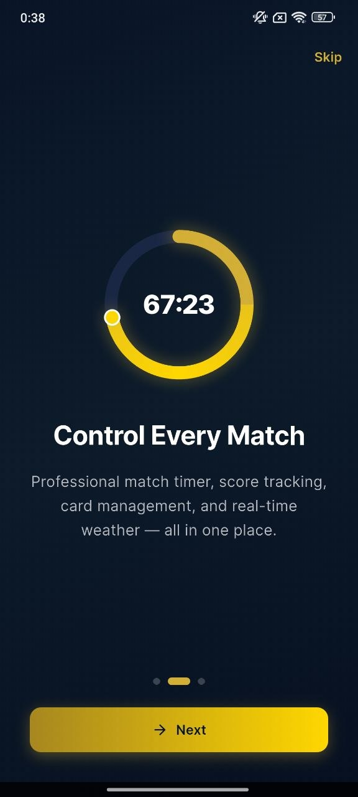
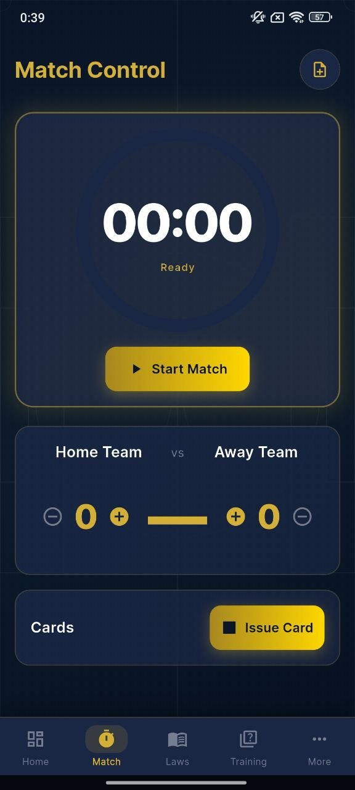
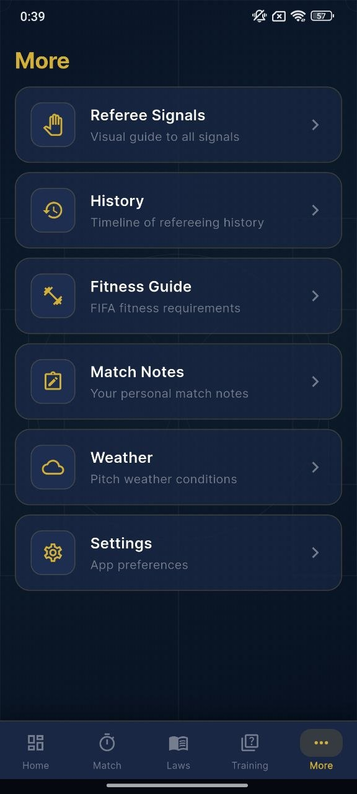
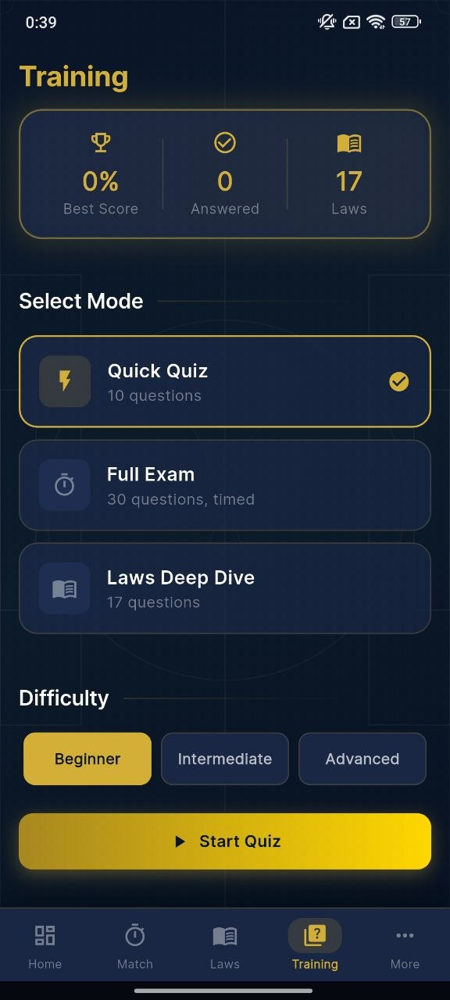

Live match control
Start and manage the match timer, update the score, register key incidents, and issue cards from a single focused control panel.
Merit King Master brings together football laws, live match tools, referee study materials, quizzes, signals, fitness support, and practical on-the-go utilities in one sharp mobile experience.



From pre-match preparation to live control and post-match study, the app is designed to keep referees organized, informed, and ready for every decision.
Start and manage the match timer, update the score, register key incidents, and issue cards from a single focused control panel.
Browse football laws with categorized cards, readable summaries, and a structure that makes studying faster and easier.
Test your knowledge with quick quizzes, full exam simulations, and deeper law-based learning paths for continuous improvement.
Access visual reference materials that help reinforce official mechanics and match-day communication standards.
Keep practical tools close at hand with notes, weather access, fitness guidance, and additional referee-focused resources.
The interface is built for clarity, fast navigation, bold visual hierarchy, and confident use under real match conditions.
The experience combines premium visual design with practical utility, making it suitable for learning, preparation, and live match usage.
A bold timer-first layout keeps the most important match data visible and easy to manage throughout the game.

Searchable law cards and readable category blocks help users study faster without visual clutter.
The app is designed to feel premium while staying useful in real-life scenarios. It balances sharp typography, high contrast, structured content, and fast interaction patterns for a more professional experience.
Whether the goal is to revise the laws, run a match cleanly, or build stronger referee instincts through practice, Merit King Master keeps the essentials together in one place.
Merit King Master is built for users who want a focused football referee experience with sharp design, practical tools, and clean navigation from the first screen to the last.